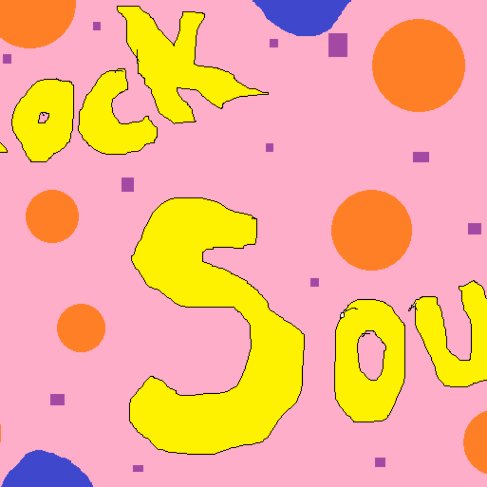

Rock Soup is an experimental collage game: an Exquisite Corpse in game form. Anyone can supply art, sound, design, and story for it. Then I stitch it all together. What makes Rock Soup unique beyond the collaborate nature is how Rock Soup is always complete while being incomplete. The game evolves over time as assets are added, but there is no vision in the game beyond crowd-making a game. Any playable build of Rock Soup is a snapshot of the whole, a single frame of what Rock Soup has been and potential for where it might go. If you’d like to submit any art, sound, music, plot, design, or else to Rock Soup, please do with this form: https://goo.gl/forms/OqcrktCi8UNU1BZb2.

Game 93/100
Rock Soup
Rock Soup is an experimental collage game: an Exquisite Corpse in game form. Anyone can supply art, sound, design, and story for it. Then I stitch it all together. What makes Rock Soup unique beyond the collaborate nature is how Rock Soup is always complete while being incomplete. The game evolves over time as assets are added, but there is no vision in the game beyond crowd-making a game. Any playable build of Rock
Year2017
DevelopmentForever?
AvailabilityPlayable